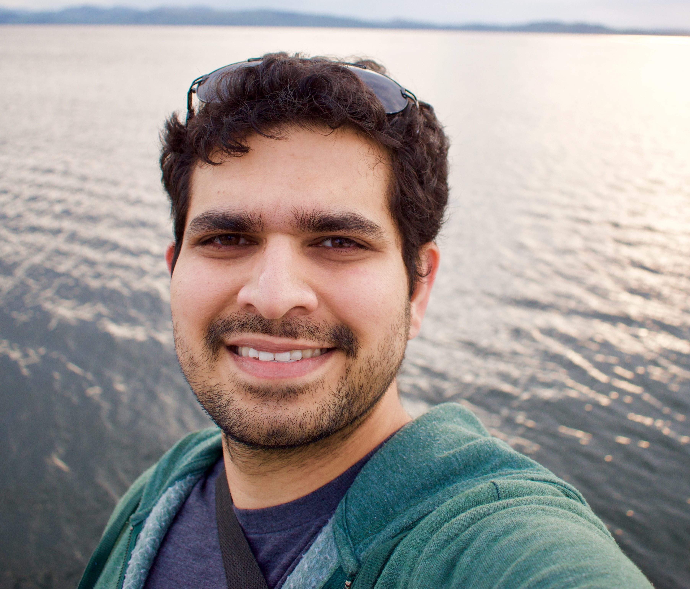

I am a Research Scientist at Pacific Northwest National Laboratory (PNNL). I received my Ph.D. in Computer Science and Engineering from University of South Florida.
Current Interests Scientific Foundation Models (Language and Multimodal Models), AI Reasoning (Scientific and Permitting)
sameerahorawalavithana [at] gmail [dot] com
Loading publications…